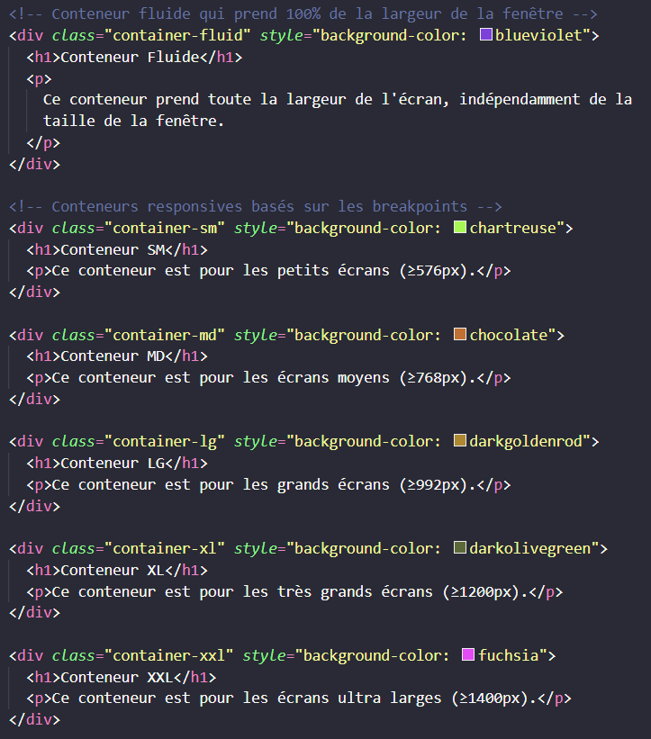

🎯 Objectifs de cet exercice :
Comprendre les différents types de conteneurs Bootstrap et leurs breakpoints (points de rupture).
📦 Les conteneurs Bootstrap :
- .container : Conteneur responsive avec largeur maximale selon l'écran (540px/720px/960px/1140px/1320px)
- .container-fluid : Prend toujours 100% de la largeur disponible
- .container-{breakpoint} : Conteneurs qui deviennent fixes à partir d'un certain breakpoint
📏 Les breakpoints Bootstrap :
- xs (extra small) : < 576px
- sm (small) : ≥ 576px
- md (medium) : ≥ 768px
- lg (large) : ≥ 992px
- xl (extra large) : ≥ 1200px
- xxl (extra extra large) : ≥ 1400px
💡 Astuce : Redimensionnez votre navigateur pour voir comment chaque conteneur réagit différemment aux changements de taille !
Cette page utilise uniquement les classes du framework Bootstrap, en important les CSS de Bootstrap avec un link dans le header :
